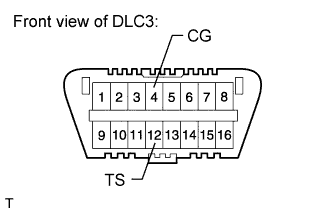
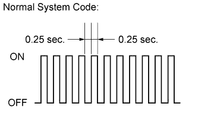
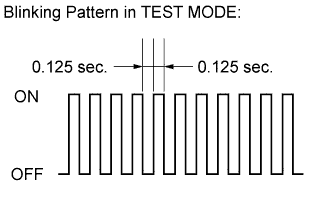

VEHICLE STABILITY CONTROL SYSTEM > CALIBRATION |
| DESCRIPTION |
| Replacement/Adjustment Part | Necessary Operation |
| Master cylinder solenoid (Skid control ECU) | Yaw rate and G sensor zero point calibration |
| Yaw rate and G sensor | 1. Clearing zero point calibration data 2. Yaw rate and G sensor zero point calibration |
| Vehicle height adjustment | 1. Clearing zero point calibration data 2. Yaw rate and G sensor zero point calibration 3. Steering angle sensor initialization |
| CLEAR ZERO POINT CALIBRATION (SST CHECK WIRE) |
Turn the engine switch on (IG).
 |
Using SST, connect and disconnect terminals 12 (TS) and 4 (CG) of the DLC3 4 times or more within 8 seconds.
 |
Check that "DIAG VSC OK" is displayed on the multi-information display*1 and check that the ABS warning light and VSC OFF indicator light*2 output the normal system code.
Using a check wire, perform zero point calibration of the yaw rate and G sensor.
| PERFORM ZERO POINT CALIBRATION OF YAW RATE AND G SENSOR (SST CHECK WIRE) |
Procedures for Test Mode:
Turn the engine switch off.
Move the shift lever to P.
Using SST, connect terminals 12 (TS) and 4 (CG) of the DLC3.
Check that the steering wheel is centered.
Turn the engine switch on (IG).
Keep the vehicle stationary on a level surface for 2 seconds or more.
 |
Check that "VSC TEST MODE" is displayed on the multi-information display*1 and check that the ABS warning light and VSC OFF indicator light*2 are blinking in test mode.
| CLEAR ZERO POINT CALIBRATION (INTELLIGENT TESTER) |
Connect the intelligent tester to the DLC3.
Turn the engine switch on (IG).
Turn the intelligent tester on.
Enter the following menus: Chassis / ABS/VSC/TRC / Utility / Reset Memory.
Using the intelligent tester, perform zero point calibration of the yaw rate and G sensor.
| PERFORM ZERO POINT CALIBRATION OF YAW RATE AND G SENSOR (INTELLIGENT TESTER) |
Procedures for Test Mode:
Turn the engine switch off.
Move the shift lever to P.
Check that the steering wheel is centered.
Connect the intelligent tester to the DLC3.
Turn the engine switch on (IG).
Turn the intelligent tester on.
Enter the following menus: Chassis / ABS/VSC/TRC / Utility / Test Mode.
Keep the vehicle stationary on a level surface for 2 seconds or more.
Check that "VSC TEST MODE" is displayed on the multi-information display*1 and check that the ABS warning light and VSC OFF indicator light*2 are blinking in test mode.